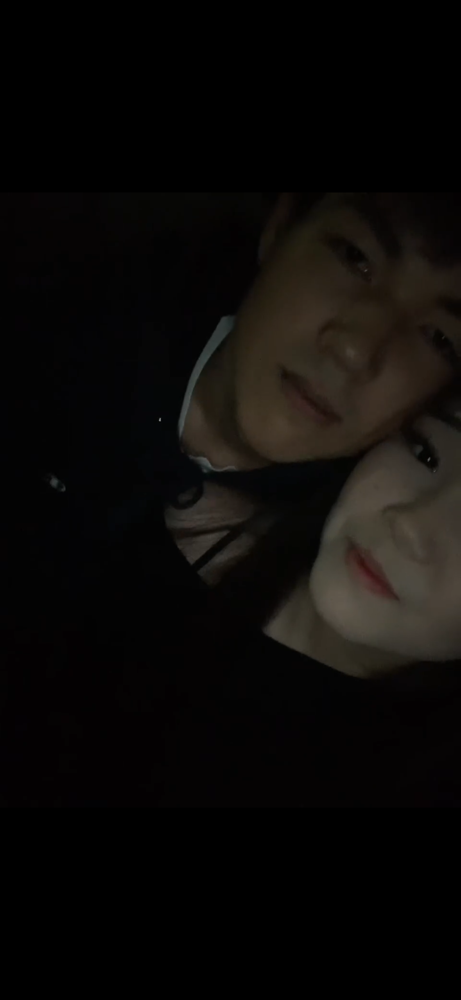
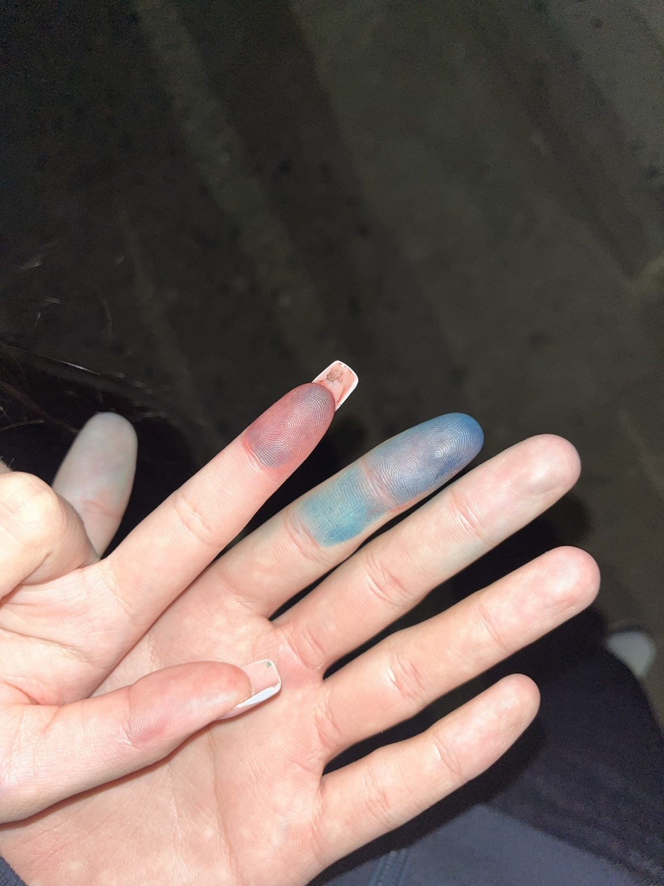
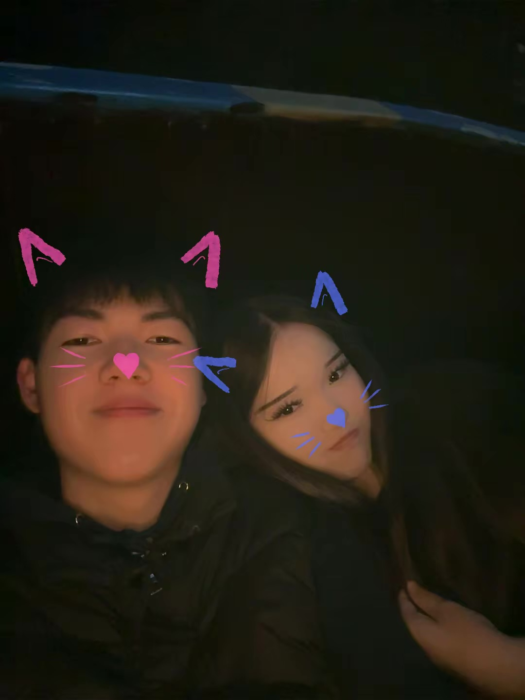
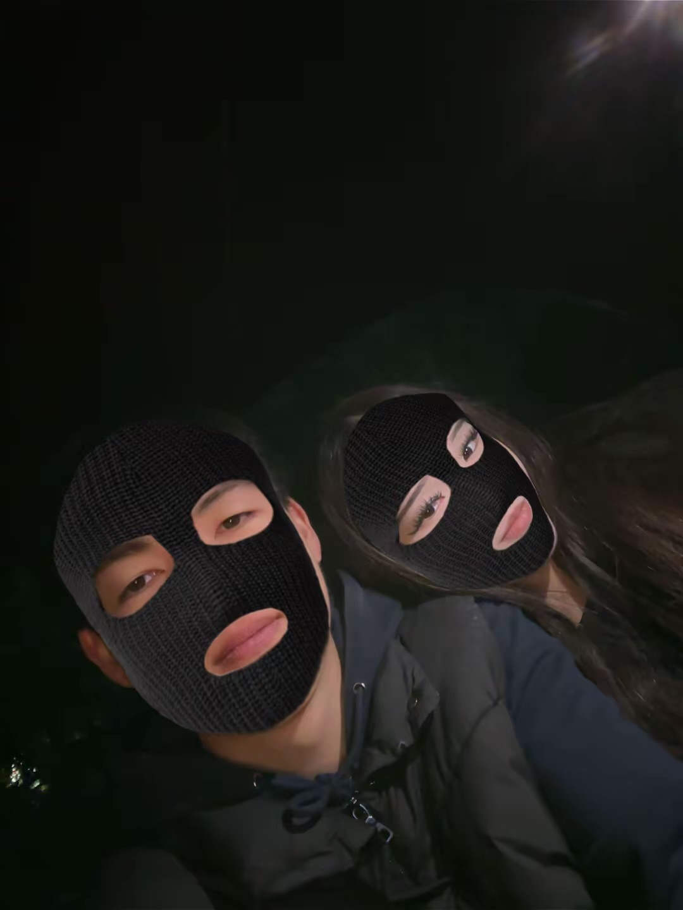
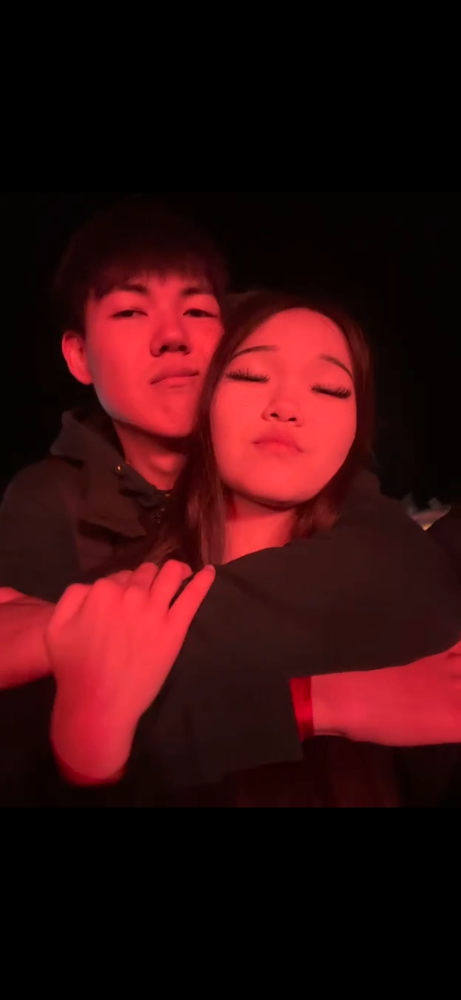
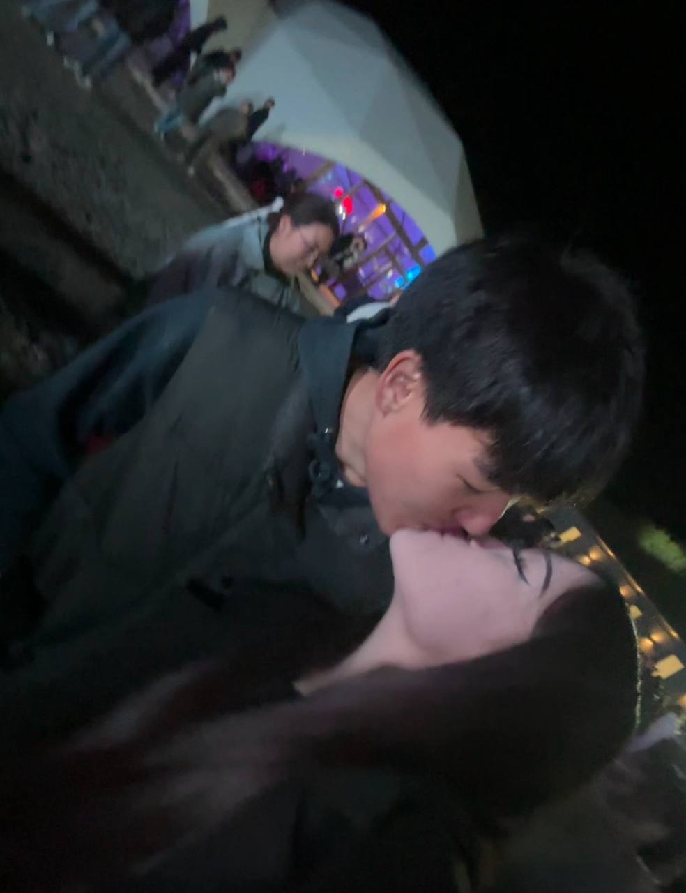

ВОСПОМИНАНИЕ № 01 · 11 мая 2026
С того самого удалённого стикера привет 😂
Кто бы мог подумать, что наша история начнётся с такого простого и немного смешного момента? 😂 Сначала было обычное «ой», потом «привет», немного смеха и первые сообщения. Тогда мы ещё не знали, к чему приведёт это знакомство. Теперь этот скриншот — самое начало нашей истории. ❤️
ВОСПОМИНАНИЕ № 02 · 21 мая 2026
А это мы пытались поболтать в мае 😊
21 мая — вечер, когда мы пытались просто спокойно поболтать, но у нас получилось целое приключение 😂 Звонки, пропущенные вызовы, «ну секунду», «ну ало» и наши смешные сообщения. Из таких маленьких моментов и складываются наши воспоминания. 😊❤️
ВОСПОМИНАНИЕ № 03 · 20 июня 2026
А тут ты сделала мне фотку с сердешком ❤️
Такой маленький, но очень тёплый момент. Иногда одна фотография может сохранить целое настроение и напоминать о человеке, рядом с которым тебе хорошо. ❤️
ВОСПОМИНАНИЕ № 04 · 26 июля 2026
Наша первая встреча на концерте LUCAVEROS 😇
А это наша первая встреча на концерте LUCAVEROS! Помнишь свою фотку, как я тебя снял, а ты потом рычала на меня из-за видео? 😂❤️ Этот день стал особенным, потому что мы впервые встретились вживую и у нашей истории появилось новое воспоминание.
ВОСПОМИНАНИЕ № 05 · 14 августа 2026 · 5 утра
Мы сидели возле твоего дома в пять утра 🥹
А это мы сидели возле твоего дома в пять утра. Вокруг ещё ночь, новый день только начинается, а нам всё равно хочется побыть рядом. Даже такой ранний час становится особенным, когда проводишь его с любимым человеком. ❤️
ВОСПОМИНАНИЕ № 06 · 14 августа 2026
Лавочка, объятия и наши руки 😊
А это мы уже сидели на лавочке, обнимались и держались за руки. Помнишь, как думали, что нам все завидуют? 😊😂 Наверное, в тот момент нам было всё равно на остальных, потому что мы просто были рядом. И пусть весь мир завидует — главное, что мы вместе. ❤️
ВОСПОМИНАНИЕ № 07 · 18 августа 2026
Самый важный день нашей жизни 💗
И наконец самый важный день нашей жизни — день, когда я предложил тебе встречаться. 😊 Помнишь, как я сказал пойти в левую сторону, а потом встал перед тобой и взял тебя за руки? А ты была в недоумении 😂 Для меня этот день особенный: именно тогда наша история стала чем-то большим. Спасибо, что стала частью моей жизни. ❤️
ВОСПОМИНАНИЕ № 08 · 24 августа 2026
Мы снимали TikTok возле твоего дома 😂


А тут мы снимали TikTok возле твоего дома. Помнишь, как мы краску на языки мазали? 😂🫂❤️ Вроде просто снимали обычный TikTok, а в итоге получился ещё один смешной момент, который хочется сохранить. С тобой даже самые обычные вещи превращаются в маленькие приключения. Хочу, чтобы таких моментов у нас было ещё очень много. 💗
ВОСПОМИНАНИЕ № 09 · 31 августа 2026
Мы тоже снимали TikTok, и ты заплакала 🥹
А тут мы тоже снимали TikTok, и ты тогда ещё заплакала, а я тебе слёзки вытирал. Было так мило и одновременно грустно. 🥹❤️ Мне хотелось, чтобы тебе было хорошо, обнять тебя покрепче и быть рядом. Любовь — это не только смех и счастливые дни, но и желание поддержать любимого человека, когда ему грустно. 🫂
ВОСПОМИНАНИЕ № 10 · 3 октября 2026
Холодно вокруг, но тепло рядом с тобой 🫂


А тут мы сидели на зарядках. Было очень холодно, но меня грело то, что мы были рядом. 🥹❤️ Иногда для счастья не нужны особенные места или идеальная погода. Достаточно просто быть рядом с человеком, которого любишь. И если выбирать между теплом без тебя и холодом рядом с тобой, я бы всё равно выбрал тебя. ❤️
ВОСПОМИНАНИЕ № 11 · 4 октября 2026
Наш второй концерт 🎤❤️


Ой, а тут мы уже были на втором концерте Мурата Тхагалегова и 5sta Family! 🥹❤️ На этом концерте мы уже не стеснялись друг друга, а наоборот, пели песни друг другу. Как же всё изменилось с нашей первой встречи! Я бы с удовольствием пережил тот вечер ещё раз — ради концерта, любимых песен и, конечно, тебя. 🫂💗
💌
На этом пока всё…
На этом пока всё 😊❤️ Но дальше будет намного больше!
Я хочу продолжать нашу маленькую историю, чтобы со временем она стала огромной. Чтобы у нас появлялось всё больше фотографий, видео, смешных моментов, тёплых объятий и воспоминаний, которые мы будем хранить в наших сердцах. 🫂💗
Я хочу, чтобы однажды мы открыли этот альбом вместе, пересмотрели всё с самого начала и улыбнулись, вспоминая, как всё начиналось и сколько прекрасного мы пережили вдвоём.
Я хочу, чтобы впереди у нас было ещё очень много счастливых дней — чтобы мы создавали новые воспоминания, поддерживали друг друга и продолжали выбирать друг друга каждый день.
Ведь это только начало нашей истории, моя хаёсая. 🥹❤️
Наша маленькая история ещё впереди. И я хочу, чтобы она стала огромной — настолько огромной, чтобы нам было что вспоминать даже спустя много-много лет.
Спасибо тебе за каждый момент, который у нас уже есть, и за все моменты, которые ещё ждут нас впереди.
Я люблю тебя, Элеонора. ❤️🫂
Продолжение обязательно будет… 💗